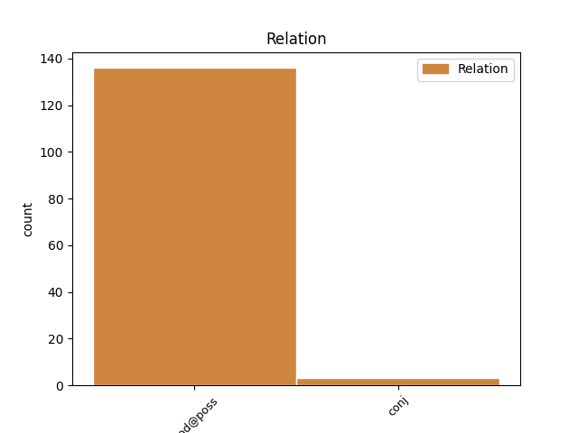
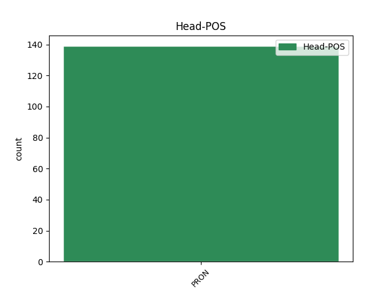
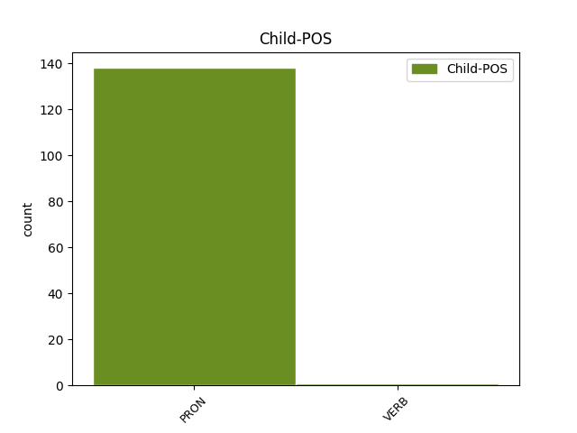

Distribution of features within this leaf



Agreement Rules sorted by frequency.
- When the dependent token is the modifer(mod@poss) of the head token, and the head token is PRON
1 وی _ _ _ _ 0 _ _ _
2 گفت _ _ _ _ 0 _ _ _
3 : _ _ _ _ 0 _ _ _
4 این _ _ _ _ 0 _ _ _
5 جناحها _ _ _ _ 0 _ _ _
6 هستند _ _ _ _ 0 _ _ _
7 که _ _ _ _ 0 _ _ _
8 با _ _ _ _ 0 _ _ _
9 بهرهوری _ _ _ _ 0 _ _ _
10 از _ _ _ _ 0 _ _ _
11 این _ _ _ _ 0 _ _ _
12 رهنمودها _ _ _ _ 0 _ _ _
13 باید _ _ _ _ 0 _ _ _
14 حرکتهای _ _ _ _ 0 _ _ _
15 سیاسی _ _ _ _ 0 _ _ _
16 و _ _ _ _ 0 _ _ _
17 فرهنگی _ _ _ _ 0 _ _ _
18 خود خود PRON PRO Number=Sing|Person=3|PronType=Prs|Reflex=Yes 0 _ _ _
19 شان آنها PRON PRO Number=Plur|Person=3|PronType=Prs 18 mod@poss _ _
20 را _ _ _ _ 0 _ _ _
21 بازسازی _ _ _ _ 0 _ _ _
22 کرده _ _ _ _ 0 _ _ _
23 و _ _ _ _ 0 _ _ _
24 ارتقاء _ _ _ _ 0 _ _ _
25 اندیشه _ _ _ _ 0 _ _ _
26 جامعه _ _ _ _ 0 _ _ _
27 را _ _ _ _ 0 _ _ _
28 در _ _ _ _ 0 _ _ _
29 بستر _ _ _ _ 0 _ _ _
30 وحدت _ _ _ _ 0 _ _ _
31 ملی _ _ _ _ 0 _ _ _
32 و _ _ _ _ 0 _ _ _
33 حفظ _ _ _ _ 0 _ _ _
34 ارزشهای _ _ _ _ 0 _ _ _
35 اسلامی _ _ _ _ 0 _ _ _
36 در _ _ _ _ 0 _ _ _
37 دستور _ _ _ _ 0 _ _ _
38 کار _ _ _ _ 0 _ _ _
39 خود _ _ _ _ 0 _ _ _
40 قرار _ _ _ _ 0 _ _ _
41 دهند _ _ _ _ 0 _ _ _
42 و _ _ _ _ 0 _ _ _
43 تا _ _ _ _ 0 _ _ _
44 وقتی _ _ _ _ 0 _ _ _
45 ما _ _ _ _ 0 _ _ _
46 مرزهای _ _ _ _ 0 _ _ _
47 فکری _ _ _ _ 0 _ _ _
48 ، _ _ _ _ 0 _ _ _
49 سیاسی _ _ _ _ 0 _ _ _
50 و _ _ _ _ 0 _ _ _
51 فرهنگی _ _ _ _ 0 _ _ _
52 خود _ _ _ _ 0 _ _ _
53 را _ _ _ _ 0 _ _ _
54 با _ _ _ _ 0 _ _ _
55 اندیشههای _ _ _ _ 0 _ _ _
56 ضداسلامی _ _ _ _ 0 _ _ _
57 روشن _ _ _ _ 0 _ _ _
58 نکنیم _ _ _ _ 0 _ _ _
59 ، _ _ _ _ 0 _ _ _
60 از _ _ _ _ 0 _ _ _
61 افتادن _ _ _ _ 0 _ _ _
62 در _ _ _ _ 0 _ _ _
63 تور _ _ _ _ 0 _ _ _
64 نامریی _ _ _ _ 0 _ _ _
65 افکار _ _ _ _ 0 _ _ _
66 آنها _ _ _ _ 0 _ _ _
67 در _ _ _ _ 0 _ _ _
68 امان _ _ _ _ 0 _ _ _
69 نخواهیم _ _ _ _ 0 _ _ _
70 ماند _ _ _ _ 0 _ _ _
71 . _ _ _ _ 0 _ _ _
1 از _ _ _ _ 0 _ _ _
2 اعتراضات _ _ _ _ 0 _ _ _
3 خیلی _ _ _ _ 0 _ _ _
4 زیادی _ _ _ _ 0 _ _ _
5 که _ _ _ _ 0 _ _ _
6 به _ _ _ _ 0 _ _ _
7 کار _ _ _ _ 0 _ _ _
8 میشود _ _ _ _ 0 _ _ _
9 ، _ _ _ _ 0 _ _ _
10 و _ _ _ _ 0 _ _ _
11 من من PRON PRO Number=Sing|Person=1|PronType=Prs 0 _ _ _
12 فکر _ _ _ _ 0 _ _ _
13 میکنم کرد#کن VERB V_PRS Number=Sing|Person=1|Tense=Pres 11 conj _ _
14 زیاد _ _ _ _ 0 _ _ _
15 درست _ _ _ _ 0 _ _ _
16 نیست _ _ _ _ 0 _ _ _
17 ، _ _ _ _ 0 _ _ _
18 این _ _ _ _ 0 _ _ _
19 است _ _ _ _ 0 _ _ _
20 که _ _ _ _ 0 _ _ _
21 آقا _ _ _ _ 0 _ _ _
22 ، _ _ _ _ 0 _ _ _
23 چرا _ _ _ _ 0 _ _ _
24 اینها _ _ _ _ 0 _ _ _
25 همدیگر _ _ _ _ 0 _ _ _
26 را _ _ _ _ 0 _ _ _
27 با _ _ _ _ 0 _ _ _
28 « _ _ _ _ 0 _ _ _
29 هوی _ _ _ _ 0 _ _ _
30 » _ _ _ _ 0 _ _ _
31 صدا _ _ _ _ 0 _ _ _
32 میکنند _ _ _ _ 0 _ _ _
33 . _ _ _ _ 0 _ _ _
Disagree Examples:
1 خود خود PRON PRO Number=Sing|Person=3|PronType=Prs|Reflex=Yes 0 _ _ _
2 م من PRON PRO Number=Sing|Person=1|PronType=Prs 1 mod@poss _ _
3 میارم _ _ _ _ 0 _ _ _
4 ، _ _ _ _ 0 _ _ _
5 خب _ _ _ _ 0 _ _ _
6 پدر _ _ _ _ 0 _ _ _
7 نیمخیز _ _ _ _ 0 _ _ _
8 میشود _ _ _ _ 0 _ _ _
9 که _ _ _ _ 0 _ _ _
10 از _ _ _ _ 0 _ _ _
11 جا _ _ _ _ 0 _ _ _
12 بلند _ _ _ _ 0 _ _ _
13 شود _ _ _ _ 0 _ _ _
14 . _ _ _ _ 0 _ _ _
1 بیا _ _ _ _ 0 _ _ _
2 خود خود PRON PRO Number=Sing|Person=3|PronType=Prs|Reflex=Yes 0 _ _ _
3 م من PRON PRO Number=Sing|Person=1|PronType=Prs 2 mod@poss _ _
4 کمک _ _ _ _ 0 _ _ _
5 ت _ _ _ _ 0 _ _ _
6 کنم _ _ _ _ 0 _ _ _
7 . _ _ _ _ 0 _ _ _
1 فقط _ _ _ _ 0 _ _ _
2 میتوانم _ _ _ _ 0 _ _ _
3 بگویم _ _ _ _ 0 _ _ _
4 که _ _ _ _ 0 _ _ _
5 به _ _ _ _ 0 _ _ _
6 دریایی _ _ _ _ 0 _ _ _
7 رسیدیم _ _ _ _ 0 _ _ _
8 که _ _ _ _ 0 _ _ _
9 رفتن _ _ _ _ 0 _ _ _
10 توی _ _ _ _ 0 _ _ _
11 این _ _ _ _ 0 _ _ _
12 دریا _ _ _ _ 0 _ _ _
13 با _ _ _ _ 0 _ _ _
14 خود خود PRON PRO Number=Sing|Person=3|PronType=Prs|Reflex=Yes 0 _ _ _
15 مان ما PRON PRO Number=Plur|Person=1|PronType=Prs 14 mod@poss _ _
16 بود _ _ _ _ 0 _ _ _
17 ، _ _ _ _ 0 _ _ _
18 ولی _ _ _ _ 0 _ _ _
19 بیرون _ _ _ _ 0 _ _ _
20 آمدن _ _ _ _ 0 _ _ _
21 ش _ _ _ _ 0 _ _ _
22 با _ _ _ _ 0 _ _ _
23 خدا _ _ _ _ 0 _ _ _
24 ؛ _ _ _ _ 0 _ _ _
25 به _ _ _ _ 0 _ _ _
26 طوری _ _ _ _ 0 _ _ _
27 که _ _ _ _ 0 _ _ _
28 من _ _ _ _ 0 _ _ _
29 اواسط _ _ _ _ 0 _ _ _
30 کار _ _ _ _ 0 _ _ _
31 حتی _ _ _ _ 0 _ _ _
32 دچار _ _ _ _ 0 _ _ _
33 مشکلات _ _ _ _ 0 _ _ _
34 روحی _ _ _ _ 0 _ _ _
35 و _ _ _ _ 0 _ _ _
36 روانی _ _ _ _ 0 _ _ _
37 شدم _ _ _ _ 0 _ _ _
38 . _ _ _ _ 0 _ _ _
1 آنها _ _ _ _ 0 _ _ _
2 را _ _ _ _ 0 _ _ _
3 وادار _ _ _ _ 0 _ _ _
4 به _ _ _ _ 0 _ _ _
5 ازدواج _ _ _ _ 0 _ _ _
6 نکنید _ _ _ _ 0 _ _ _
7 که _ _ _ _ 0 _ _ _
8 بعد _ _ _ _ 0 _ _ _
9 حاصل _ _ _ _ 0 _ _ _
10 این _ _ _ _ 0 _ _ _
11 ازدواج _ _ _ _ 0 _ _ _
12 آن _ _ _ _ 0 _ _ _
13 بچه _ _ _ _ 0 _ _ _
14 بشود _ _ _ _ 0 _ _ _
15 و _ _ _ _ 0 _ _ _
16 حاصل _ _ _ _ 0 _ _ _
17 ازدواج _ _ _ _ 0 _ _ _
18 خود خود PRON PRO Number=Sing|Person=3|PronType=Prs|Reflex=Yes 0 _ _ _
19 تان شما PRON PRO Number=Plur|Person=2|PronType=Prs 18 mod@poss _ _
20 جدایی _ _ _ _ 0 _ _ _
21 بشود _ _ _ _ 0 _ _ _
22 و _ _ _ _ 0 _ _ _
23 حالا _ _ _ _ 0 _ _ _
24 جدایی _ _ _ _ 0 _ _ _
25 نه _ _ _ _ 0 _ _ _
26 ! _ _ _ _ 0 _ _ _
1 خب _ _ _ _ 0 _ _ _
2 این _ _ _ _ 0 _ _ _
3 یعنی _ _ _ _ 0 _ _ _
4 آینه _ _ _ _ 0 _ _ _
5 تمامنما _ _ _ _ 0 _ _ _
6 که _ _ _ _ 0 _ _ _
7 آقا _ _ _ _ 0 _ _ _
8 اگر _ _ _ _ 0 _ _ _
9 خود _ _ _ _ 0 _ _ _
10 ت _ _ _ _ 0 _ _ _
11 را _ _ _ _ 0 _ _ _
12 دیدی _ _ _ _ 0 _ _ _
13 ، _ _ _ _ 0 _ _ _
14 اصلاح _ _ _ _ 0 _ _ _
15 کن _ _ _ _ 0 _ _ _
16 و _ _ _ _ 0 _ _ _
17 اگر _ _ _ _ 0 _ _ _
18 خود خود PRON PRO Number=Sing|Person=3|PronType=Prs|Reflex=Yes 0 _ _ _
19 ت تو PRON PRO Number=Sing|Person=2|PronType=Prs 18 mod@poss _ _
20 و _ _ _ _ 0 _ _ _
21 ندیدی _ _ _ _ 0 _ _ _
22 فبها _ _ _ _ 0 _ _ _
23 . _ _ _ _ 0 _ _ _